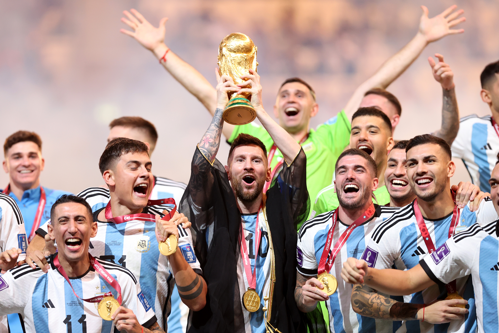
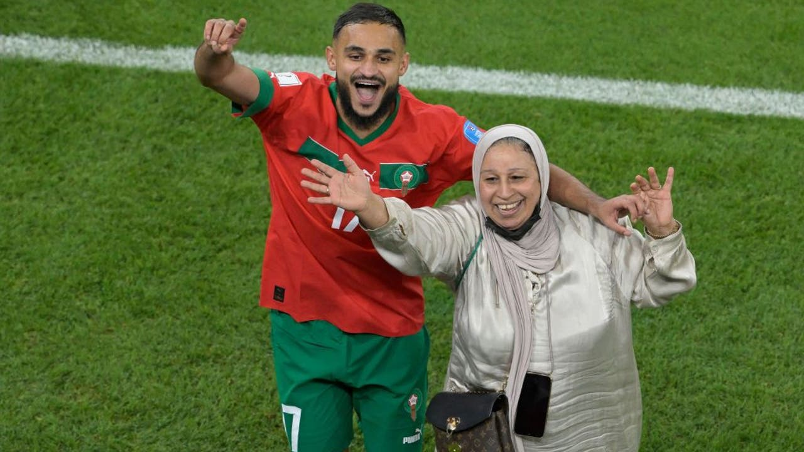
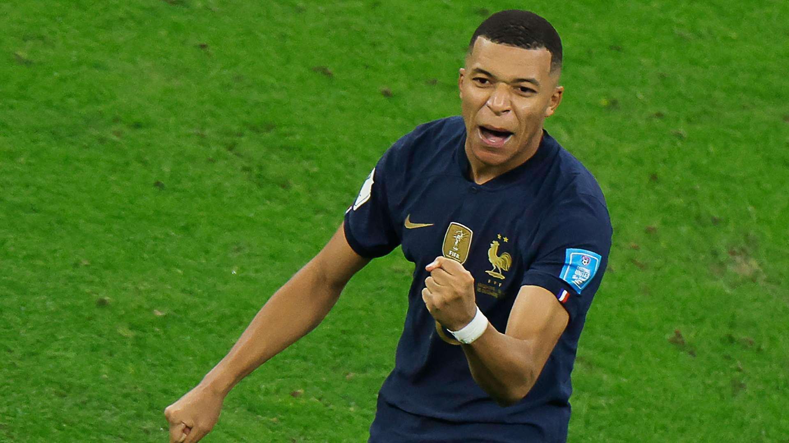
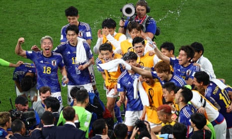
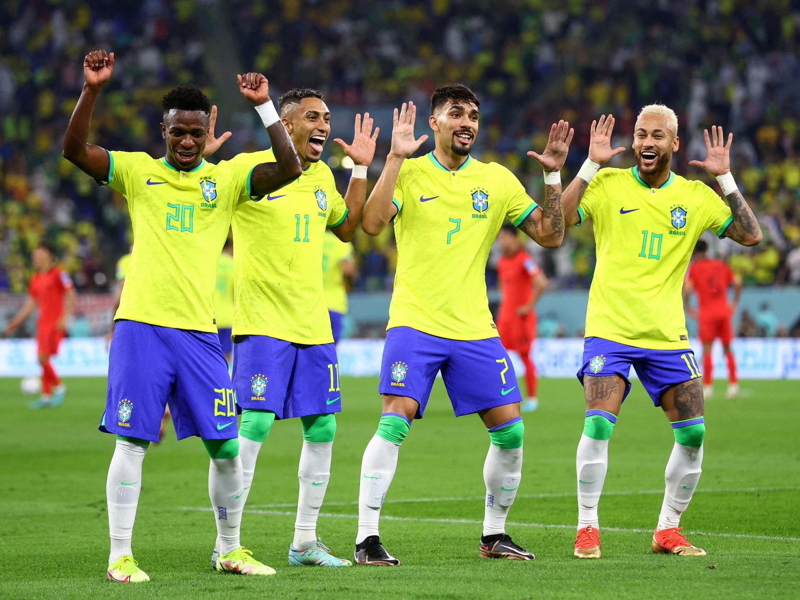
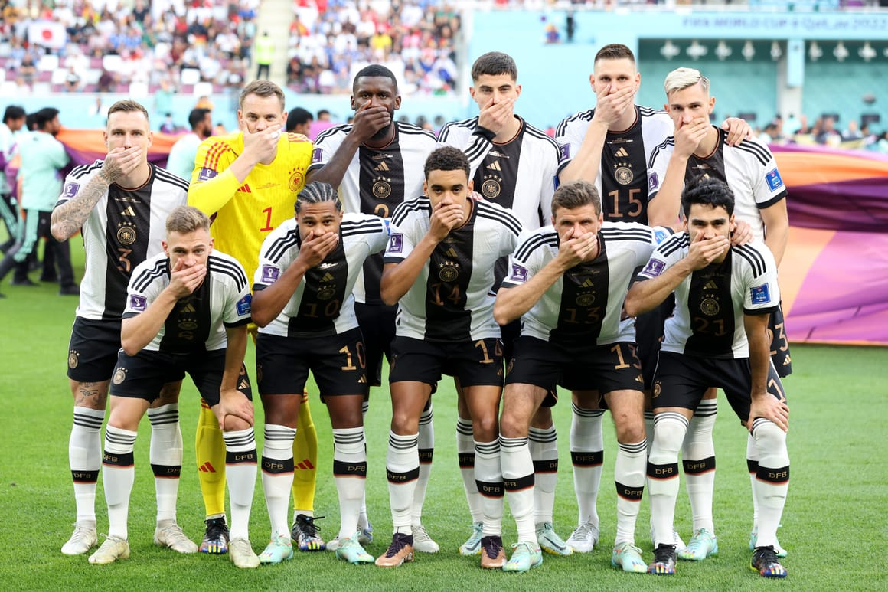

Top 10 Moments From the FIFA World Cup 2022 in Qatar
Relive the Top 10 unforgettable moments from the FIFA World Cup 2022 in Qatar, from stunning upsets to historic victories, with iconic images.
FIFA World Cup 2022
Qatar was a tournament of firsts, from its November-December schedule to historic upsets and recored breaking moments. Despite Controversies, the world was captivated by stunning goals, unexpected victories, and emotional celebrations. Here are the Top 10 momeents that defined Qatar 2022.
1. Lionel Messi Lifts the World Cup Trophy.
Argentina's victory over France In the Final (4-2 on penalties ater a 3-3 draw) marked Lionel Messi's crowning achievement. His two goals and penalty shootout composure secured Argentina's first World Cup since 1986, fulfilling a lifelong dream for the football Legend. The image of Messi hoisting the trophy, draped in a Qatari bisht, become iconic.
2. Saudi Arabia's Shock Upset Over Argentina.
On November 22, 51st-ranked Saudi Arabia stunned world no. 3 Argentina 2-1 in their opening match. Saleh Al-Shehri and Salem Al-Dawsari scored within five minutes in the second half, overcoming Messi's early penalty. This upset sparked wild celebrations and memes across the Arab World.

3. Morocco Becomes First African Semifinalist.
Morocco's Atlas Lions made history as the first African Team to reach the World Cup Semi-Finals, defeating Belgium, Spain, and Portugal. Their 2-0 win over Belguim was a highlight, with Sofiane Boufal's dance with his mother on the pitch capturing global hearts.
4. Kylian Mbappe Hat-Trick In The Final
France's Kylian Mbappe scored a stunning Hat-Trick in the final against Argentina, nearly overturning a 2-0 deficit. His two goals in a quick sucession and a penalty in extra time forced a shootout, earning him the Golden Boot despite France's Loss
5. Japan's Comeback Against Germany
Japan's 2-1 victory over Germany on November 23 was a major Group E upset. Trailing 1-0, the Blue Samurai rallied with goals from Ritsu Doan and Takuma Asano, showcasing their never-give-up spirit and shocking the 2014 Champions.
6. Cristaino Ronaldo's Historic Five World Cup
Cristaino Ronaldo became the first male player to score in five World Cups with a penalty against Ghana. Despite controversy over a goal initially attributed to him (later given to Bruno Fernandes), his achievement cemented his Legacy.
.jpg)
7. Brazil's Samba Dance celebrations
Brazil's 4-1 rout of South Korea in the round of 16 featured vibrant dance celebrations after goals by Vinicius Jr., Neyamr, Richarlison, and Lucas Paqueta. Their Half-time samba display captivated fans, though their campaign ended in a quarter-final loss to Croatia.
8. Stephanie Frappart's Historic Refereeing
Stephanie Frappart became the first woman to referee a men's World Cup Match (Germany vs. Costa Rica), joined by assistants Neuza Back and Karen Diaz. This milestone marked a step forward for gender equality in football.
9. Germany's Silent Protest Against FIFA
Before their match against Japan, Germany's team posed with hands over mouth to protest FIFA's ban on the "OneLove" anti-discrimination armband. This bold gesture highlighted freedom of expression issues in Qatar.
10. Wout Weghorst's Injury Time Equalizer
Netherland's Wout Weghorst scored a dramatic goal in the 11th minute of stoppage time against Argentina in the quarter-final, forcing a 2-2 draw and a penalty shootout. Despite Argentina's win, the "Battle of Lusail" set a record with 18 yellow cards.

Conclusion
From Messi's Triumph to Moricco's historic run, the 2022 World Cup delivered unforgettable drama. These moments remind us why football unites Billions. Tell us Your Top Moments In the Comment Section.
Take our fun quiz about the FIFA World Cup 2022
Comments